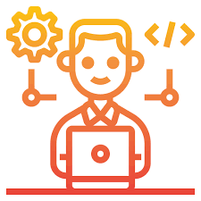
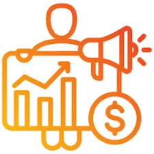
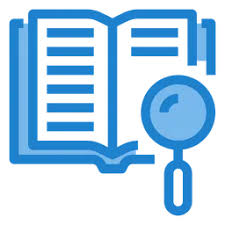
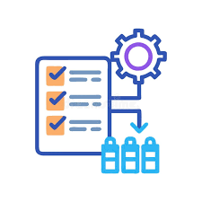
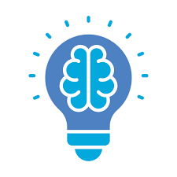

Professional & Corporate
A clean, structured design ideal for corporate roles, traditional industries,
and executive positions.
Select Template
Customer Service & Support
Highlights problem-solving skills, communication, and customer satisfaction.
Select Template
Healthcare & Medical
Designed for medical professionals, showcasing certifications, clinical experience, and patient care.
Select Template

Developer & Tech-Focused
Highlight your GitHub, LinkedIn, and project links. Designed for developers, engineers,
and IT professionals.
Select Template
Entry-Level & Student
A clean layout for recent graduates or those with limited experience, highlighting education and internships.
Select Template
Under Construction - preview available

Sales & Marketing Pro
Emphasizes achievements in sales quotas, campaigns, and client acquisition.
Select Template
Under Construction - preview available

Academic & Research
Ideal for researchers, students, and educators. Focuses on publications, conferences, and grants.
Select Template
Under Construction - preview available

Project Management
Focuses on methodologies, project timelines, and leadership in project delivery.
Select Template
Under Construction - preview available

Creative & Visual
Perfect for artists, designers, and creatives who want to showcase their personality
and include a professional headshot.
Select Template